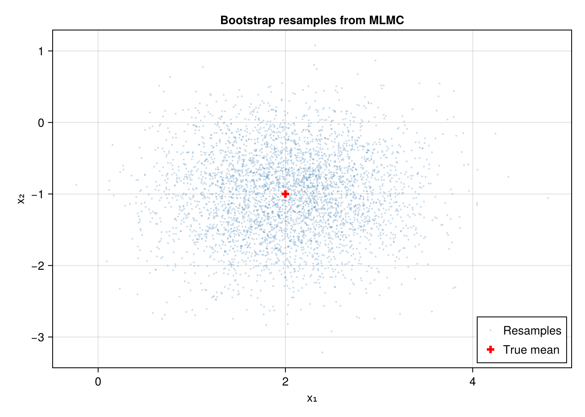
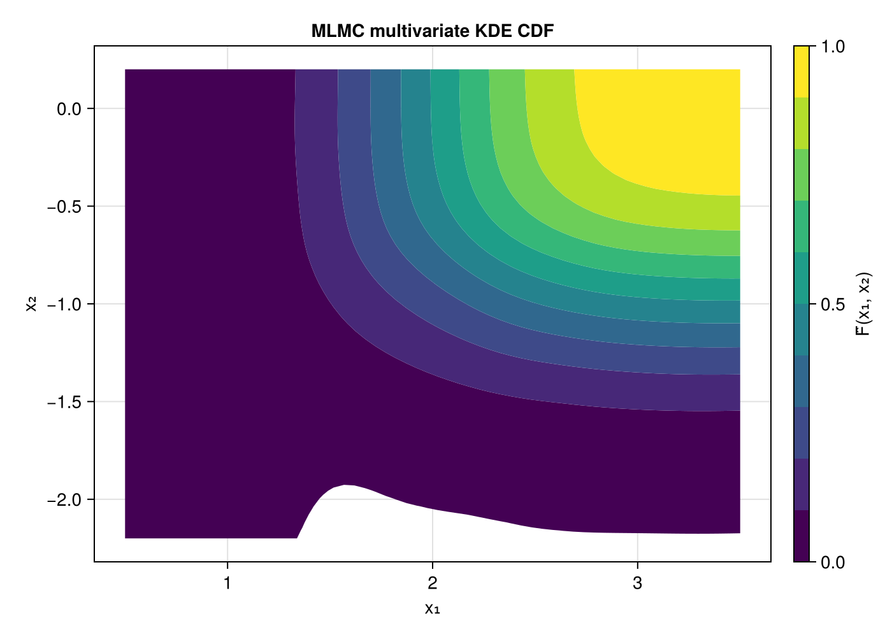
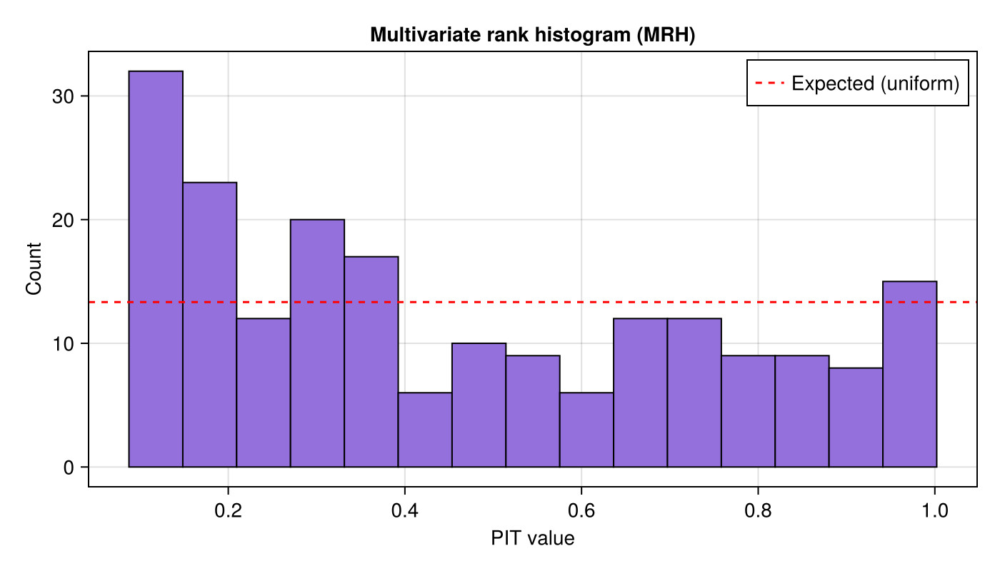
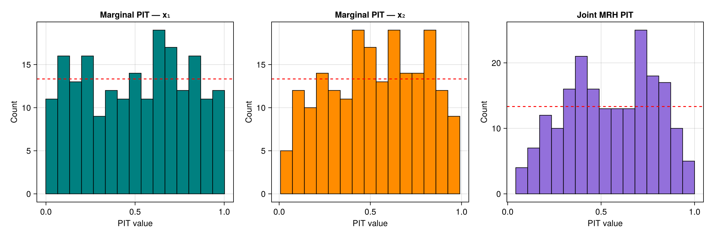
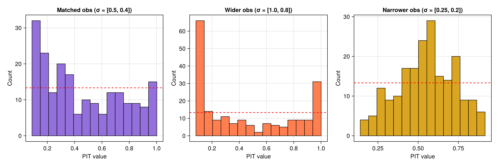
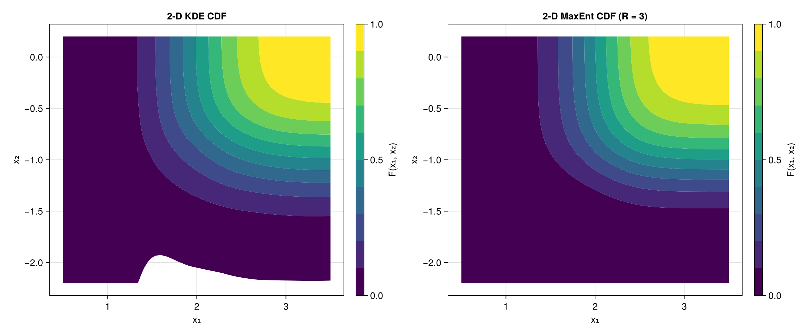
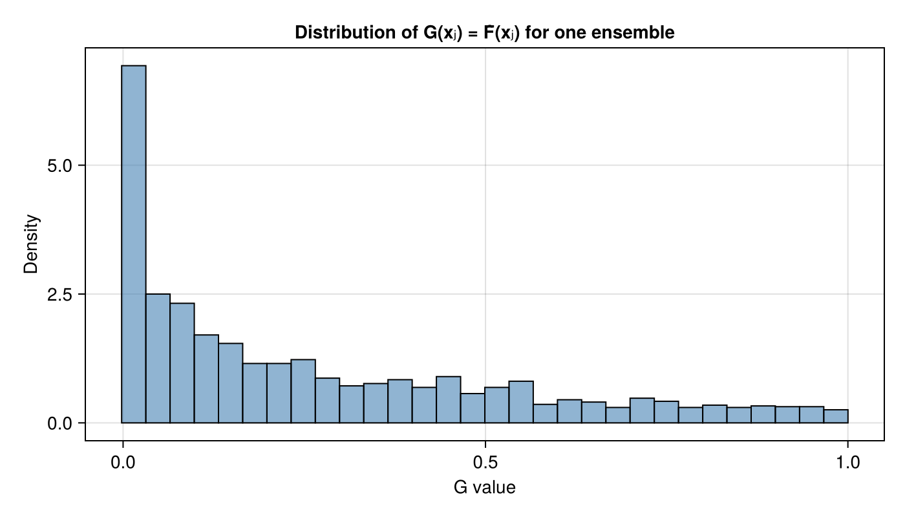

Multivariate Rank Histogram
The multivariate rank histogram (MRH) of Gneiting et al. (2008) extends rank-based calibration diagnostics to vector-valued quantities of interest.
Given an observation $\mathbf{x}_0$ and an ensemble $\mathbf{x}_1, \ldots, \mathbf{x}_m$, the pre-rank is
\[\pi_{\mathrm{MRH}}(\mathbf{x}_i) = \sum_{j=0}^{m} \mathbf{1}\!\bigl[\mathbf{x}_j \preceq \mathbf{x}_i\bigr],\]
where $\preceq$ denotes component-wise ordering. A theorem (Gneiting et al.) shows that the MRH rank equals
\[\mathrm{rank}_{\mathrm{MRH}}(\mathbf{x}_0) = \hat{F}_G\!\bigl(G(\mathbf{x}_0)\bigr),\]
where $G(\mathbf{x}) = \hat{F}(\mathbf{x})$ is the multivariate CDF and $\hat{F}_G$ is the empirical CDF of the $G$-values over the ensemble.
In the MLMC setting the multivariate CDF is estimated with a product Gaussian-CDF kernel via estimate_cdf_multivariate_mlmc_kernel_density, and the ensemble is generated via ml_bootstrap_resample_multivariate.
Model setup
We use a 2D Gaussian model: $(X_1, X_2) \sim \mathcal{N}\!\bigl([2,\,-1],\, \mathrm{diag}(0.25,\,0.16)\bigr)$ with three levels of decreasing noise.
using MultilevelMonteCarlo
using CairoMakie
using Statistics
using Random
Random.seed!(42)
μ = [2.0, -1.0]
σ = [0.5, 0.4]
draw_parameters() = μ .+ σ .* randn(2)
levels = Function[
params -> params + 0.3 * randn(2), # coarse
params -> params + 0.03 * randn(2), # medium
params -> Float64.(params), # fine
]
qoi_functions = Function[x -> x[1], x -> x[2]]
samples_per_level = [1500, 750, 200]Bootstrap resamples
First, let us visualise the multivariate MLMC resamples. Bootstrap resampling preserves within-sample correlations between dimensions.
samples = mlmc_sample(levels, qoi_functions, samples_per_level, draw_parameters)
resampled = ml_bootstrap_resample_multivariate(samples, [1, 2], 4000)
fig = Figure(size = (700, 500))
ax = Axis(fig[1, 1]; title = "Bootstrap resamples from MLMC",
xlabel = "x₁", ylabel = "x₂")
scatter!(ax, resampled[1, :], resampled[2, :];
markersize = 3, color = (:steelblue, 0.3), label = "Resamples")
# Mark the true mean
scatter!(ax, [μ[1]], [μ[2]]; markersize = 12, color = :red,
marker = :cross, label = "True mean")
axislegend(ax; position = :rb)
Multivariate CDF contours
The product-kernel KDE gives a smooth estimate of the joint CDF.
F̂ = estimate_cdf_mlmc_kernel_density_2d(samples, (1, 2))
# Evaluate CDF on a grid
x1_grid = range(μ[1] - 3σ[1], μ[1] + 3σ[1]; length = 60)
x2_grid = range(μ[2] - 3σ[2], μ[2] + 3σ[2]; length = 60)
cdf_vals = [F̂(x1, x2) for x2 in x2_grid, x1 in x1_grid]
fig = Figure(size = (700, 500))
ax = Axis(fig[1, 1]; title = "MLMC multivariate KDE CDF",
xlabel = "x₁", ylabel = "x₂")
co = contourf!(ax, collect(x1_grid), collect(x2_grid), cdf_vals;
levels = 0.0:0.1:1.0, colormap = :viridis)
Colorbar(fig[1, 2], co; label = "F̂(x₁, x₂)")
MRH PIT histogram
Now we run multivariate_rank_histogram. Each iteration draws a truth sample, builds a fresh MLMC ensemble, estimates the multivariate CDF, bootstrap-resamples, and records the PIT value.
n_rank = 200
n_resamples = 300
pit_mrh = multivariate_rank_histogram(levels, qoi_functions, draw_parameters,
n_rank, samples_per_level;
number_of_resamples = n_resamples)A flat histogram indicates correct multivariate calibration:
n_bins = 15
fig = Figure(size = (700, 400))
ax = Axis(fig[1, 1]; title = "Multivariate rank histogram (MRH)",
xlabel = "PIT value", ylabel = "Count")
hist!(ax, pit_mrh; bins = n_bins, color = :mediumpurple, strokewidth = 1)
hlines!(ax, [n_rank / n_bins]; color = :red, linestyle = :dash,
label = "Expected (uniform)")
axislegend(ax; position = :rt)
Comparison with marginal rank histograms
The MRH tests joint calibration. Marginal rank histograms (using rank_histogram_cdf with univariate KDE) test each dimension independently.
pit_x1 = rank_histogram_cdf(levels, qoi_functions[1], draw_parameters,
n_rank, samples_per_level,
estimate_cdf_mlmc_kernel_density)
pit_x2 = rank_histogram_cdf(levels, qoi_functions[2], draw_parameters,
n_rank, samples_per_level,
estimate_cdf_mlmc_kernel_density)
fig = Figure(size = (1200, 400))
ax1 = Axis(fig[1, 1]; title = "Marginal PIT — x₁",
xlabel = "PIT value", ylabel = "Count")
hist!(ax1, pit_x1; bins = n_bins, color = :teal, strokewidth = 1)
hlines!(ax1, [n_rank / n_bins]; color = :red, linestyle = :dash)
ax2 = Axis(fig[1, 2]; title = "Marginal PIT — x₂",
xlabel = "PIT value", ylabel = "Count")
hist!(ax2, pit_x2; bins = n_bins, color = :darkorange, strokewidth = 1)
hlines!(ax2, [n_rank / n_bins]; color = :red, linestyle = :dash)
ax3 = Axis(fig[1, 3]; title = "Joint MRH PIT",
xlabel = "PIT value", ylabel = "Count")
hist!(ax3, pit_mrh; bins = n_bins, color = :mediumpurple, strokewidth = 1)
hlines!(ax3, [n_rank / n_bins]; color = :red, linestyle = :dash)
Mismatched observations
The observation-based interface lets us test with observations drawn from a different distribution than the one the MLMC ensemble simulates.
Wider observations — $\sigma_{\mathrm{obs}} = (1.0, 0.8)$ vs the simulation's $\sigma = (0.5, 0.4)$. The observations spread beyond the ensemble, so the PIT histogram shows a U-shape.
Narrower observations — $\sigma_{\mathrm{obs}} = (0.25, 0.2)$ vs the simulation's $\sigma = (0.5, 0.4)$. The observations cluster near the centre, producing a peaked PIT histogram.
σ_wider = [1.0, 0.8]
σ_narrower = [0.25, 0.2]
obs_wider = hcat([μ .+ σ_wider .* randn(2) for _ in 1:n_rank]...)
obs_narrower = hcat([μ .+ σ_narrower .* randn(2) for _ in 1:n_rank]...)
pit_wider = multivariate_rank_histogram(obs_wider, levels, qoi_functions,
samples_per_level, draw_parameters;
number_of_resamples = n_resamples)
pit_narrower = multivariate_rank_histogram(obs_narrower, levels, qoi_functions,
samples_per_level, draw_parameters;
number_of_resamples = n_resamples)fig = Figure(size = (1200, 400))
ax1 = Axis(fig[1, 1]; title = "Matched obs (σ = [0.5, 0.4])",
xlabel = "PIT value", ylabel = "Count")
hist!(ax1, pit_mrh; bins = n_bins, color = :mediumpurple, strokewidth = 1)
hlines!(ax1, [n_rank / n_bins]; color = :red, linestyle = :dash)
ax2 = Axis(fig[1, 2]; title = "Wider obs (σ = [1.0, 0.8])",
xlabel = "PIT value", ylabel = "Count")
hist!(ax2, pit_wider; bins = n_bins, color = :coral, strokewidth = 1)
hlines!(ax2, [n_rank / n_bins]; color = :red, linestyle = :dash)
ax3 = Axis(fig[1, 3]; title = "Narrower obs (σ = [0.25, 0.2])",
xlabel = "PIT value", ylabel = "Count")
hist!(ax3, pit_narrower; bins = n_bins, color = :goldenrod, strokewidth = 1)
hlines!(ax3, [n_rank / n_bins]; color = :red, linestyle = :dash)
2-D CDF contours: KDE vs MaxEnt
We can also compare the 2-D CDF estimated by kernel density estimation with the Maximum Entropy method. Both use the same MLMC samples.
F̂_kde = estimate_cdf_mlmc_kernel_density_2d(samples, (1, 2))
F̂_me, _, _, _ = estimate_cdf_maxent_2d(samples, (1, 2); R = 3)
x1_grid = range(μ[1] - 3σ[1], μ[1] + 3σ[1]; length = 50)
x2_grid = range(μ[2] - 3σ[2], μ[2] + 3σ[2]; length = 50)
cdf_kde = [F̂_kde(x1, x2) for x2 in x2_grid, x1 in x1_grid]
cdf_me = [F̂_me(x1, x2) for x2 in x2_grid, x1 in x1_grid]
fig = Figure(size = (1200, 500))
ax1 = Axis(fig[1, 1]; title = "2-D KDE CDF", xlabel = "x₁", ylabel = "x₂")
co1 = contourf!(ax1, collect(x1_grid), collect(x2_grid), cdf_kde;
levels = 0.0:0.1:1.0, colormap = :viridis)
Colorbar(fig[1, 2], co1; label = "F̂(x₁, x₂)")
ax2 = Axis(fig[1, 3]; title = "2-D MaxEnt CDF (R = 3)", xlabel = "x₁", ylabel = "x₂")
co2 = contourf!(ax2, collect(x1_grid), collect(x2_grid), cdf_me;
levels = 0.0:0.1:1.0, colormap = :viridis)
Colorbar(fig[1, 4], co2; label = "F̂(x₁, x₂)")
CDF-value distribution
We can also inspect the distribution of $G(\mathbf{x}_j)$ values for one ensemble. Under correct calibration these are concentrated in $[0,1]$.
F̂_single = estimate_cdf_mlmc_kernel_density_2d(samples, (1, 2))
ens = ml_bootstrap_resample_multivariate(samples, [1, 2], 2000)
g_vals = [F̂_single(ens[1, j], ens[2, j]) for j in 1:size(ens, 2)]
fig = Figure(size = (700, 400))
ax = Axis(fig[1, 1]; title = "Distribution of G(xⱼ) = F̂(xⱼ) for one ensemble",
xlabel = "G value", ylabel = "Density")
hist!(ax, g_vals; bins = 30, normalization = :pdf,
color = (:steelblue, 0.6), strokewidth = 1)